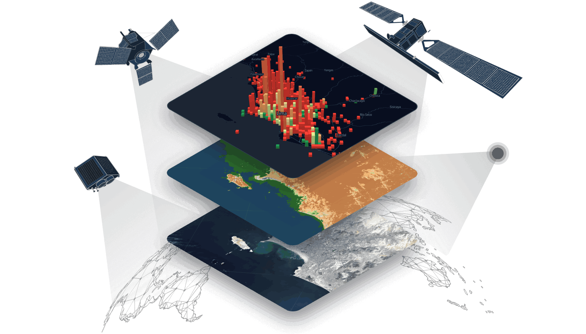

We research how AI reads the land.
// From orbit to insight - openly.
TechShoor Agri is an applied research group working at the intersection of remote sensing, deep learning and agriculture. We build multi-spectral models, crop-disease detectors and open benchmarks that read the signals nature already sends - from orbit.
Current focus · GeoAgri-MS-VLM →
Disease-detection models we've built.
A core strand of our research: deep-learning classifiers that identify crop disease from a single leaf image. Eight crops, published as free, interactive prototypes you can try right now.
An applied research group for geospatial agriculture.
TechShoor Agri sits at the intersection of remote sensing, deep learning and agriculture. We're not selling a product - we're researching one: building multi-spectral models, disease detectors and open benchmarks, and partnering with researchers and institutions to turn satellite data into agricultural insight for Pakistan and beyond.
GeoAgri-MS-VLM - teaching AI to read a field, not just look at it.
A Multi-Spectral Vision-Language Model for Geospatial Agricultural Analysis. One model that takes raw multi-band satellite imagery and answers questions about it in plain language - what's growing, whether it's stressed, and what to do next.
Most vision models are spectrally blind.
A standard vision-language model sees only Red, Green and Blue - the same three channels as a phone camera. But the earliest fingerprints of drought, disease and nutrient deficiency hide in the bands the eye can't see: red-edge, near-infrared and short-wave infrared. GeoAgri-MS-VLM reads all 13 Sentinel-2 bands, so it can flag trouble weeks before it surfaces in an ordinary photo.
RGB model sees 3 bands · GeoAgri-MS-VLM reads 13
From spectral pixels to a spoken answer.
Sentinel-2
13-band GeoTIFF tile
Prithvi-EO 2.0
Geospatial foundation model
MLP Projector
Aligns vision → language
Qwen2.5-VL-7B
Reasons & answers
❄️ frozen · 🔥 trained - only the lightweight projector and QLoRA adapters are trained, so the whole system fits and trains on a single consumer GPU.
Three jobs, one model.
Crop-Type Classification
Identify what's growing in each field straight from multi-spectral imagery - no ground visit required.
Stress & Disease Detection
Surface drought, nutrient and disease signatures early - while there's still time to act on them.
Agricultural VQA
Ask a question about a field in plain English and get a grounded, evidence-based answer back.
PakAgri-GeoTIFF-VQA
A purpose-built benchmark pairing GeoTIFF satellite tiles with agricultural question–answer pairs across real farming regions of Pakistan - created to evaluate multi-spectral reasoning where it matters most.
- 01A parameter-efficient adaptation recipe. A LoRA / QLoRA method for adapting multi-spectral VLMs, validated through six systematic, pre-registered ablation studies.
- 02The PakAgri-GeoTIFF-VQA benchmark. A new, openly evaluable dataset for multi-spectral agricultural reasoning grounded in Pakistan's fields.
- H1Does a multi-spectral VLM outperform an RGB-only VLM on agricultural tasks?
- H2How much does the spectral-fusion strategy change performance? (four strategies compared)
- H3Does accuracy vary by crop type × growth stage - and where does the model struggle?
🌱 How it connects: GeoAgri-MS-VLM is the research engine behind the next generation of TechShoor Agri - evolving today's one-model-per-crop detectors into a single system that understands the whole field, end to end.
What else we're researching.
Active research directions where we're turning multi-spectral satellite data into agricultural insight - each backed by an early, interactive prototype.
Crop-health monitoring
Plant Health Analysis
Building a complete picture of crop vigor and condition across a whole field from imagery.
View prototype →Stress detection
Water-Stress Detection
Researching how to detect hydration stress early, zone by zone, before symptoms reach the leaf.
View prototype →Irrigation intelligence
Water-Use Mapping
Studying where water actually goes - to make irrigation more efficient and cut waste.
View prototype →Nutrient mapping
Fertilizer & Nutrient Mapping
Pinpointing nutrient gaps across a field so every kilo of fertilizer earns its keep.
View prototype →The problem we're researching against.
The pressure on global food systems is real. Better, data-driven decisions in the field are part of the answer - and that's what our research is for.
people face hunger worldwide
of global freshwater withdrawals go to agriculture
of crop production is lost to pests & diseases each year
of food is wasted every single year
Sustainable Development Goals.
Our work maps directly onto four UN Sustainable Development Goals - food, water, livelihoods and climate.
Zero Hunger
More resilient yields for food security.
Clean Water
Smarter irrigation, far less waste.
Decent Work & Growth
Higher returns for farming communities.
Climate Action
Efficient, lower-impact agriculture.
Let's collaborate on geospatial agriculture.
Our research mission.
Read the signals nature already provides - rigorously, openly and cost-effectively - and turn them into knowledge farmers and researchers can use.
Better quality
Accurate, timely information about the health and condition of every crop.
More quantity
Optimized irrigation, fertilization and pest control for higher output.
Real-time signals
Satellite imagery and deep learning analyze crop conditions as they change.
Sustainability
Help farmers raise yields while making food production more sustainable.
Predictability
Deep learning surfaces patterns and trends for far more reliable forecasts.
Self-sustenance
The tools and knowledge farmers need to become more independent.
From raw orbit data to a tested model.
Four stages take us from raw multi-spectral imagery to rigorously evaluated, reproducible models.
Data Acquisition
Gather multi-band Sentinel-2 imagery over real agricultural regions.
Spectral Processing
Turn raw GeoTIFFs into clean, model-ready multi-spectral tiles.
Model Development
Train and adapt deep-learning and vision-language architectures.
Evaluation
Benchmark rigorously against held-out data and open datasets.